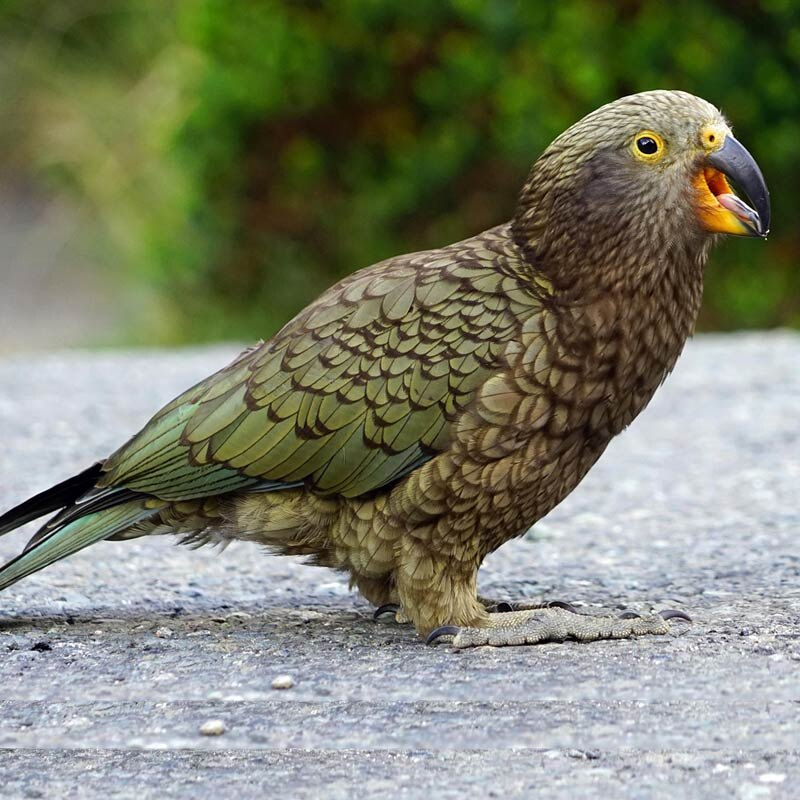
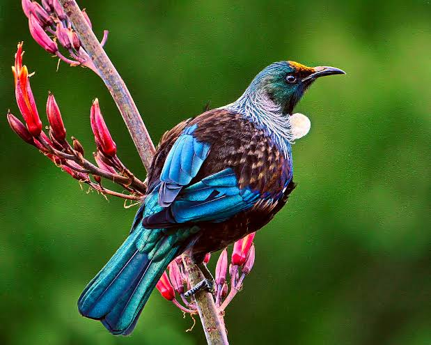
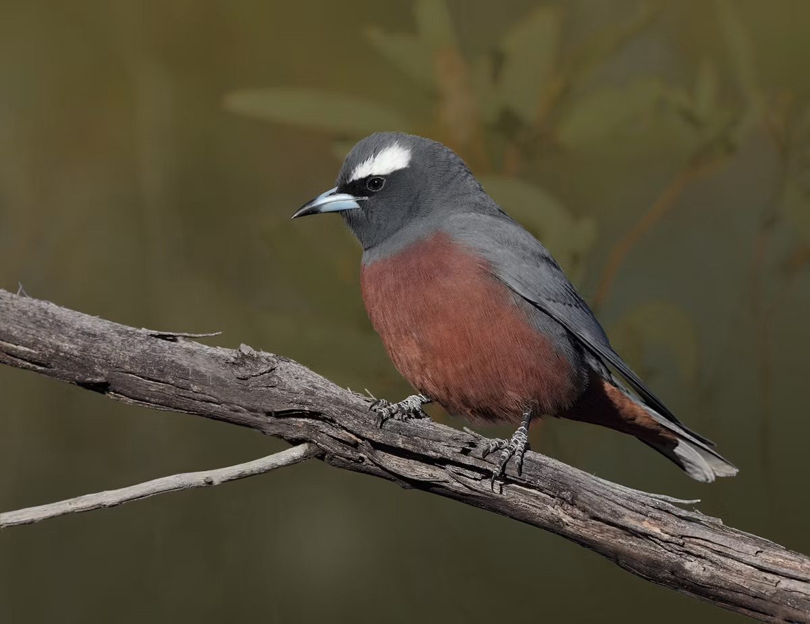

Welcome to the wonders of New Zealnd Wildlife

As you travel through New Zealnd you can spot many animals from your car. Here is some easy animals you can spot:



© 2026 New Zealand wildlife. All rights reserved.
Visit Utah State University